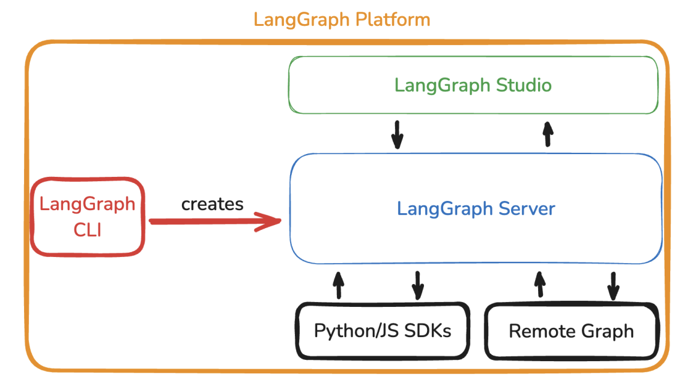

LangGraph
随着 Agent 应用逐渐从简单问答系统演进为复杂的 AI 工作流，开发者开始发现传统的 Agent 框架在复杂流程控制、状态管理以及长时间任务执行方面存在明显限制。许多真实业务场景并不是简单的线性流程，而是包含条件分支、循环执行、状态更新以及多阶段推理。在这种情况下，仅依靠 Chain 或简单 Agent 结构往往难以构建稳定可靠的系统。为了解决这些问题，LangChain 团队推出了 LangGraph。LangGraph 可以理解为 LangChain 体系中的高级工作流编排框架，它通过图结构（Graph）来组织 Agent 执行流程，使 AI 系统能够像软件工程中的状态机一样运行。

与传统 Chain 的线性执行不同，LangGraph 的核心思想是：
用图结构描述 AI 工作流。
在这种架构中，每一个节点代表一个执行步骤，而节点之间的连接关系则定义了任务流程的执行路径。这种设计使 Agent 系统能够更加灵活地处理复杂任务。
State Graph
LangGraph 最核心的概念是 State Graph（状态图）。
在 State Graph 中，整个 AI 系统的执行流程被表示为一张图： 节点（Node）代表任务步骤
边（Edge）代表执行路径状态（State）代表当前任务上下文每当一个节点执行完成，系统会更新当前状态，然后根据状态决定下一步应该进入哪个节点。一个简单的 State Graph 可以表示为：
flowchart TD
input[用户输入] --> intent[意图识别]
intent --> retrieval[知识库检索]
retrieval --> generation[答案生成]
generation --> response[结果返回]但在复杂系统中，Graph 可以包含更多逻辑，例如：
条件分支
循环执行
错误处理
多任务协作
例如，在智能客服系统中，State Graph 可以按以下节点和分支组织：
flowchart TD
input[用户输入] --> intent[识别用户意图]
intent --> needKnowledge{需要知识库检索？}
needKnowledge -->|是| knowledge[检索知识库]
needKnowledge -->|否| needTool{需要工具调用？}
knowledge --> needTool
needTool -->|是| tool[调用工具]
needTool -->|否| reply[生成回复]
tool --> reply
reply --> continue{用户继续提问？}
continue -->|是| input
continue -->|否| done[结束]通过这种方式，LangGraph 可以很好地管理复杂对话状态与任务流程。 State Graph 的最大优势在于：
流程结构清晰，并且可以显式管理系统状态。
这对于复杂 Agent 系统来说非常重要。
Workflow Agent
在 LangGraph 中，Agent 不再只是一个单独的推理模块，而是整个工作流的一部分。开发者可以将 Agent 作为 Graph 中的某个节点，例如：
-
推理节点
-
工具调用节点
-
数据处理节点
-
输出生成节点
这样一来，Agent 的执行逻辑就被纳入整个工作流体系中，而不是独立运行。例如，在一个 RAG 系统中，Workflow Agent 的执行流程可以表示为：
flowchart TD
question[用户问题输入] --> needRetrieval{Agent 判断是否需要检索？}
needRetrieval -->|否| answer[生成答案]
needRetrieval -->|是| search[调用向量数据库]
search --> context[拼接上下文]
context --> answer
answer --> enough{信息是否充足？}
enough -->|是| done[返回答案]
enough -->|否| search如果 Agent 发现信息不足，还可以重新进入检索节点，从而形成循环工作流。这种设计方式使得 Agent 可以实现多轮推理、任务分解、自我反思和多次工具调用等复杂行为。
在工程实践中，Workflow Agent 通常用于构建智能客服系统、自动研究 Agent、代码生成 Agent 和企业数据分析 Agent。
由于所有流程都在 Graph 中定义，因此系统结构会更加清晰，也更容易维护。
Durable Execution
在实际生产环境中，Agent 系统往往需要执行长时间任务。例如： 复杂数据分析
多阶段文档生成自动研究任务长时间对话系统如果系统在执行过程中出现异常，例如： 服务器重启任务中断 API 调用失败传统 Agent 系统往往需要重新开始执行整个流程，这会导致效率非常低。 LangGraph 引入了一个重要机制：
Durable Execution（持久化执行）。
Durable Execution 的核心思想是：
在每个节点执行完成后，系统都会保存当前状态。当任务中断时，可以从上一次执行的位置继续运行。例如，一个复杂任务包含 10 个节点： 如果执行到第 7 步系统崩溃，那么恢复后可以直接从第 7 步继续，而不需要重新执行前面的步骤。这种机制带来了几个重要优势： 首先，系统可靠性大幅提升。即使任务中断，也不会丢失执行进度。其次，Agent 可以支持超长任务执行。例如数小时甚至数天的任务。第三，开发者可以在任何节点观察系统状态，从而更容易调试复杂 Agent。在企业级 AI 系统中，这种能力非常关键，因为很多业务流程都需要稳定的长时间执行能力。总体来看，LangGraph 的出现标志着 Agent 技术进入了工作流工程化阶段。与传统 LangChain Agent 相比，LangGraph 更加适合构建复杂、多步骤、可恢复的 AI 系统。通过 State Graph、 Workflow Agent 以及 Durable Execution 三大核心机制，开发者可以像设计软件架构一样设计 AI 工作流。